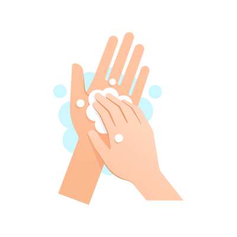
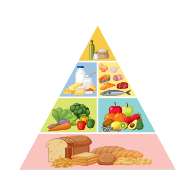
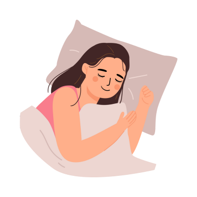
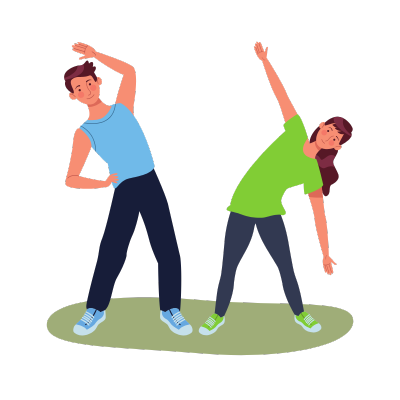
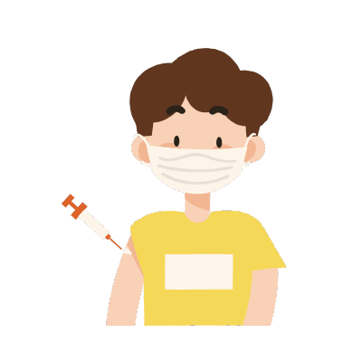
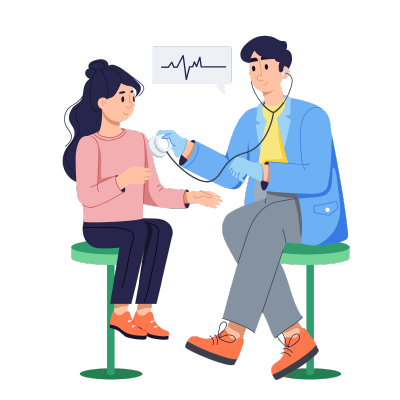
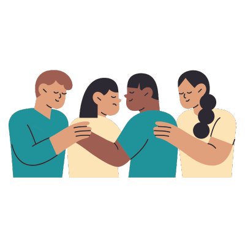
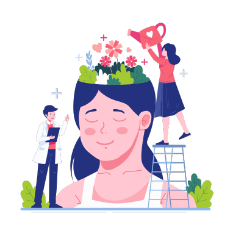

Roadmap to Well-Being: Prevention Measures
1

Hand Hygiene
- Washing hands regularly with soap and water is a simple yet powerful way to prevent illness. It eliminates germs that can be transferred from surfaces and other people. Aim for at least 20 seconds of washing, especially before meals, after restroom use, or contact with public spaces.
2

Balanced Diet
- Maintaining a balanced diet strengthens your immune system, helps maintain a healthy weight, and fuels your body with essential nutrients. Include a variety of fruits, vegetables, proteins, and whole grains. Limit sugar and processed foods for optimal health benefits.
3

Quality Sleep
- Getting 7-8 hours of sleep is vital for physical and mental health. Good sleep improves mood, memory, and immune function, while also reducing the risk of chronic diseases. Establish a regular sleep routine and create a restful environment to improve sleep quality.
4

Physical Exercise
- Engaging in at least 30 minutes of exercise daily can improve cardiovascular health, build muscle, and support mental well-being. Activities like walking, cycling, or yoga help maintain a healthy weight and reduce the risk of chronic diseases.
5
Mindfulness & Relaxation
- Practicing mindfulness, meditation, and deep breathing helps reduce stress, increases focus, and improves overall mental health. Taking time each day for relaxation techniques can also enhance resilience and provide better emotional balance.
6

Vaccinations
- Staying up-to-date with vaccinations protects you and those around you from preventable diseases. Vaccines are especially important for children, the elderly, and individuals with chronic health conditions, helping build immunity and avoid outbreaks.
7

Regular Checkups
- Annual health checkups allow for early detection and prevention of potential health issues. Screenings for blood pressure, cholesterol, and glucose, along with physical exams, help maintain a healthy baseline and address concerns proactively.
8

Support Network
- Building strong connections with friends, family, or support groups provides a sense of belonging and emotional security. Having a reliable support network can make it easier to navigate life's challenges and maintain positive mental health.
9
Community Involvement
- Participating in community activities promotes a sense of purpose and connection. Volunteering, attending local events, or joining clubs allows for personal growth, builds new relationships, and fosters community well-being.
10
Emergency Plans
- Having an emergency plan prepares you for unexpected situations. Know emergency contacts, routes, and supplies for quick action in times of need. This planning can provide peace of mind and ensure safety for you and your loved ones.
11
Avoid Smoking & Alcohol
- Reducing or eliminating tobacco and alcohol can greatly improve long-term health. These habits increase the risk of various diseases, and avoiding them promotes a healthier lifestyle, improved physical fitness, and reduced healthcare costs.
12

Mental Health Support
- Seeking mental health support, whether through counseling, therapy, or trusted friends, helps address emotional challenges. Proactively managing mental health is essential for overall well-being, resilience, and a fulfilling life.